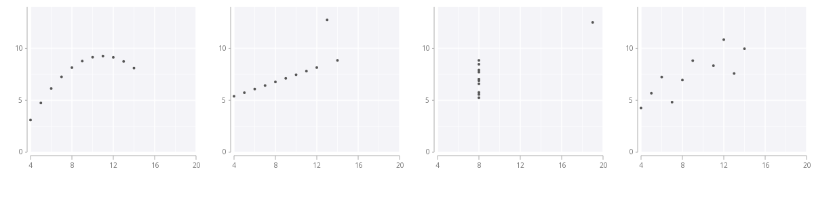

MULTIVARIATE AND EXPLORATORY ANALYSIS
Designed Statistical Hypothesis and tests for Univariate as well as Multivariate data. Conducted T test, Chi squared tests, ANOVA, MANOVA and A/B tests on the data.
Designed and Fit Parametric as well as non-parametric models to multivariate data in order to have a better understanding of the data. I have been a part of projects where I had to work with US census, House Pricing and IPL datasets. APart from the above mentioned datasets, I have conducted exploratory analysis on Corona Virus dataset and New York Taxi Fare dataset.